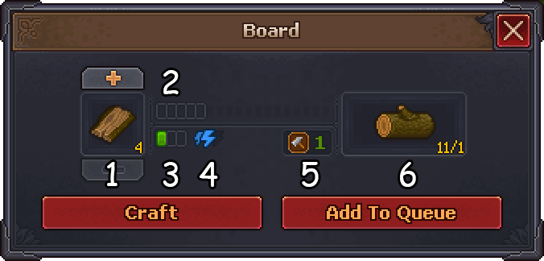

Workstations are blueprints where the Keeper and zombies can work to create items in exchange for materials and  Energy.
Energy.
All recipes at a workstation require the same type of Mastery, but each recipe has its own Mastery requirement.
Crafting

- Result
- Ticks
- Progress per successful tick
- Energy spent per tick
- Mastery needed
- Material(s)
Navigation